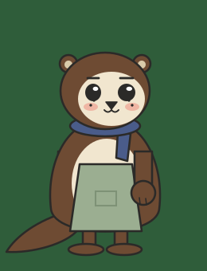

One inline SVG, transformed by CSS. Idle runs on its own. The other four are triggered here and by the interface later. Correction is a pause, then a look at the plan, then action. It never signals right or wrong.
State: idle

64 px, the mobile scene size
| Budget | Measured | Limit proposed |
|---|---|---|
| Rig SVG bytes | 4638 raw, 1126 gzip | 12 000 gzip per character |
| Elements per rig | 120 | |
| Idle frame rate | measuring | 60, and no layout work per frame |
| Animated properties | transform and opacity only | never width, height, d or filter |
| Concurrent idle rigs on one screen | 2 on this page | 4 in the square, 1 at the table |
Reduced motion turns every state into a cut to its end pose. The static fallback is a PNG of the neutral pose. Nothing here touches a scored input: the character reacts to the plan, not to the answer.